Apply functions in iterations using the {purrr} package from {tidyverse}.
Develop coding styles that make scripts easier to read and understand (📝)
This course follows the framework proposed by Hadley Wickham, Mine Çetinkaya-Rundel, and Garrett Grolemund (Figure 1), which outlines the tools needed in a typical data science project. The focus of this course is on programming, which acts as the “envelope” that wraps around and connects all the other tools.
Figure 1: Data science model of Hadley Wickham, Mine Çetinkaya-Rundel and Garrett Grolemund. https://r4ds.hadley.nz/intro#fig-ds-diagram
1.1 Course structure
Blocks
Day
Course introduction
Introduction to programming in R
Introduction to functional programming
06/05/26
Theory of functions in R
How to write functions
08/05/26
Object-oriented programming and iterations using loops
Functional programming
Iterations over one and two arguments
13/05/26
Iterations over multiple arguments
Iterations without output
Function operators and other functionals
Parallelization
15/05/26
2 Introduction to programming in R
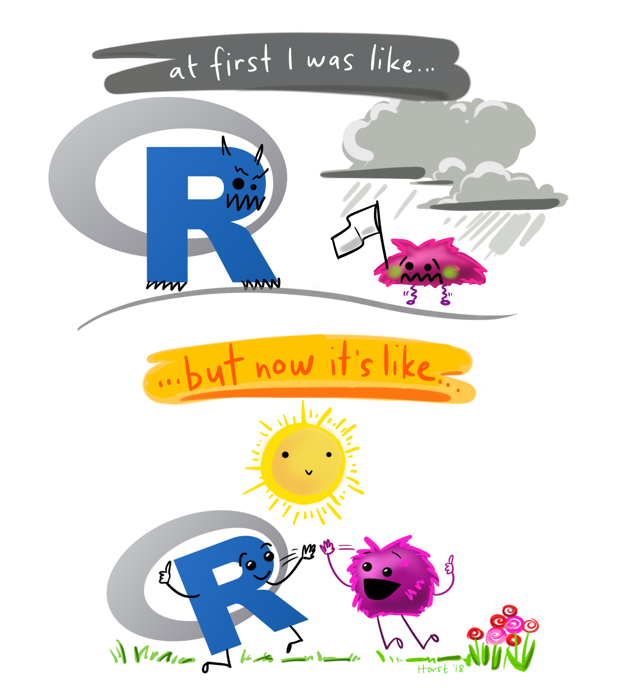
The process of learning R, por Allison Horst. https://allisonhorst.com/everything-else
2.1 Basic concepts
R: A dynamic programming language, meaning that code is interpreted and executed as it runs, rather than being precompiled.
RStudio: An Integrated Development Environment (IDE) for R programming. It is organized into four main panels:
Code Editor: Where you write scripts and functions.
Console: Where code is executed immediately.
Workspace Browser: Shows your environment (objects) and command history.
Bottom-right Panel: Contains Files, Plots, Packages, and Help tabs for managing projects and exploring results.
Object: Any element in R that is associated with a name. Objects can be of various types: numeric, integer, logical, data.frame, SpatVector, etc.
library(tidyverse)# Vectors: one-dimensional objectsv1 <-c(1, 2, 3, 4)v2 <-c(1, 2, 3, 4)v3 <-c("hi", "hola", "hola", "hi")v4 <-c(TRUE, TRUE, TRUE, FALSE, FALSE)# Matrices: two-dimensional structures with elements of the same typemymatrix_num <-matrix(c(v1, v2), nrow =4, ncol =2)mymatrix_num
# Data Frame: Traditional table structuremydf <-data.frame(v1, v2, v3)# Tibble: modern version of a data frame from {tibble}mytibble <-tibble(v1, v2, v3)mytibble
# A tibble: 4 × 3
v1 v2 v3
<dbl> <dbl> <chr>
1 1 1 hi
2 2 2 hola
3 3 3 hola
4 4 4 hi
# List: Flexible container that can hold elements of different types:mylist <-list(v1, v2, v3, v4)mylist
In R, an In R, an object is the actual data (e.g., c(1, 2, 3, 4)), while a name is a label that points to it (e.g., a or b).
💡 When we write mean(x = a), we are linking the value of a to the name x. In R, this link is called a promise: it is a promise to provide the value of a only if x is ever used inside the function. The value is not copied immediately.
📝 Object names should be descriptive and cannot have some special characters (^, !, $, @, +, -, /, *). Also, R is case-sensitive (a ≠ A), so it’s better to stick to lowercase letters.
In R, lists are very common, and functions like map() from {purrr} often return them by default. However, lists can become messy, especially if element names are lost. The {tidyr} function nest() helps manage this by creating list-columns inside a data frame: it generates one row per group defined by the non-nested columns, while the nested columns contain the corresponding subset of data as lists.
mynested_tibble <- mytibble |># data.frame with list-columnsgroup_by(v3) |>nest()mynested_tibble
# A tibble: 2 × 2
# Groups: v3 [2]
v3 data
<chr> <list>
1 hi <tibble [2 × 2]>
2 hola <tibble [2 × 2]>
💡 You can explore different types of objects in R here.
Functions: objects in R that take inputs and produce outputs by performing a specific action or task. They are the fundamental building blocks of R, which is a functional programming language, meaning that writing and combining functions is the primary way to structure and execute code efficiently.
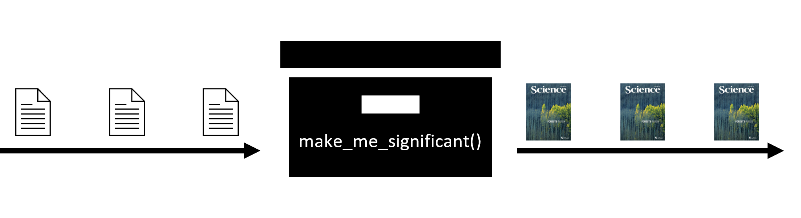
To understand computation in R, this two truths are very useful:
- Everything that exist in R in an object.
- Everything that happen in R is the result of a function call.
Packages: collections that contain reusable functions, documentation, and exampledatasets. They are the fundamental units of reproducible code in R, allowing you to share tools, workflows, and analyses with others easily.
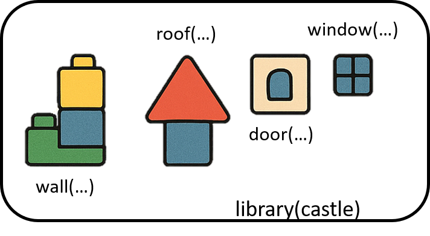
Packages contain functions focused on a common purpose—for example, building a castle.
CRAN (Comprehensive R Archive Network) is the official repository of R packages, functions, documentation, and example datasets. It provides a centralized, reliable source for installing and updating R packages.
2.1.1 Exercise
Choose a number and multiply it by 3.
Create an object that contains 100 values between 1900 and 2000.
Add a number to your object.
Multiply your object by itself.
Create an object that contains the number 5 repeated 9 times along with a sequence from 5 to 50 in steps of 5.
Find the length of the previous object.
2.1.2 Exercise
Create a list that contains two data frames, each with two named variables and ten observations per variable.
Access the eighth observation of the second variable from each data frame by using indexation.
2.2 Tidyverse
Tidyverse is a collection of R packages (meta-package) initially developed by Hadley Wickham. It contains eight main packages: {readr}, {tibble}, {dplyr}, {tidyr}, {stringr}, {forcats}, {ggplot2} and {purrr}. It can be considered a dialect of R, optimized for human-friendly data analysis and tidy data workflows, where each column is a variable, each row is an observation, and each cell contains a single value.
Additionally, the functions are designed to be combined using the pipe operator (%>% from {magrittr} package or |> from base R). Pipes allow a left-to-right reading flow, taking the output of the expression on the left and using it as the first argument of the function on the right.
💡 While %>% and |> have small differences, their overall behavior is very similar.
myvector <-c(6, 4)mean(myvector)
[1] 5
myvector |># CTRL+SHIFT+M - shortcut for the pipemean()
# A tibble: 344 × 8
species island bill_length_mm bill_depth_mm flipper_length_mm body_mass_g
<fct> <fct> <dbl> <dbl> <int> <int>
1 Adelie Torgersen 39.1 18.7 181 3750
2 Adelie Torgersen 39.5 17.4 186 3800
3 Adelie Torgersen 40.3 18 195 3250
4 Adelie Torgersen NA NA NA NA
5 Adelie Torgersen 36.7 19.3 193 3450
6 Adelie Torgersen 39.3 20.6 190 3650
7 Adelie Torgersen 38.9 17.8 181 3625
8 Adelie Torgersen 39.2 19.6 195 4675
9 Adelie Torgersen 34.1 18.1 193 3475
10 Adelie Torgersen 42 20.2 190 4250
# ℹ 334 more rows
# ℹ 2 more variables: sex <fct>, year <int>
summary(penguins)
species island bill_length_mm bill_depth_mm
Adelie :152 Biscoe :168 Min. :32.10 Min. :13.10
Chinstrap: 68 Dream :124 1st Qu.:39.23 1st Qu.:15.60
Gentoo :124 Torgersen: 52 Median :44.45 Median :17.30
Mean :43.92 Mean :17.15
3rd Qu.:48.50 3rd Qu.:18.70
Max. :59.60 Max. :21.50
NA's :2 NA's :2
flipper_length_mm body_mass_g sex year
Min. :172.0 Min. :2700 female:165 Min. :2007
1st Qu.:190.0 1st Qu.:3550 male :168 1st Qu.:2007
Median :197.0 Median :4050 NA's : 11 Median :2008
Mean :200.9 Mean :4202 Mean :2008
3rd Qu.:213.0 3rd Qu.:4750 3rd Qu.:2009
Max. :231.0 Max. :6300 Max. :2009
NA's :2 NA's :2
# A tibble: 344 × 2
sex body_mass_g
<fct> <int>
1 male 6300
2 male 6050
3 male 6000
4 male 6000
5 male 5950
6 male 5950
7 male 5850
8 male 5850
9 male 5850
10 male 5800
# ℹ 334 more rows
2.2.2 Exercise
With the penguins dataset, create an object with individuals of the Adelie species and arrange the data.frame according to flipper length.
Create an object from the previous one where you select the island and the variables related to the bill.
Create an object from the one created in step 1 where you select everything except the species.
# A tibble: 344 × 9
bill_volume_mm2 species island bill_length_mm bill_depth_mm flipper_length_mm
<dbl> <fct> <fct> <dbl> <dbl> <int>
1 366. Adelie Torge… 39.1 18.7 181
2 344. Adelie Torge… 39.5 17.4 186
3 363. Adelie Torge… 40.3 18 195
4 NA Adelie Torge… NA NA NA
5 354. Adelie Torge… 36.7 19.3 193
6 405. Adelie Torge… 39.3 20.6 190
7 346. Adelie Torge… 38.9 17.8 181
8 384. Adelie Torge… 39.2 19.6 195
9 309. Adelie Torge… 34.1 18.1 193
10 424. Adelie Torge… 42 20.2 190
# ℹ 334 more rows
# ℹ 3 more variables: body_mass_g <int>, sex <fct>, year <int>
penguins |>mutate(female_penguin =case_when( sex =="female"& body_mass_g <3600~"small female", sex =="female"& body_mass_g >=3600~"big female",TRUE~NA)) |>select(female_penguin, sex, body_mass_g)
# A tibble: 344 × 3
female_penguin sex body_mass_g
<chr> <fct> <int>
1 <NA> male 3750
2 big female female 3800
3 small female female 3250
4 <NA> <NA> NA
5 small female female 3450
6 <NA> male 3650
7 big female female 3625
8 <NA> male 4675
9 <NA> <NA> 3475
10 <NA> <NA> 4250
# ℹ 334 more rows
# summarise# it is used with summary functions: n, n_distinct, mean, etc.# see ?summarisepenguins |>summarise(body_min =min(body_mass_g, na.rm =TRUE),body_max =max(body_mass_g, na.rm =TRUE) )
With the penguins dataset, count the number of cases on each island and calculate the mean flipper length for each island.
Calculate the ratio between the weight in kg and the flipper length for each individual.
mypenguins <- penguins |>mutate(bill_volume_mm2 = (bill_length_mm * bill_depth_mm) /2,female_penguin =case_when( sex =="female"& body_mass_g <3600~"small female", sex =="female"& body_mass_g >=3600~"big female",TRUE~NA)) write_delim(mypenguins, file ="mypenguins.csv", delim =";")# In the argument file, you have to specify the directory where you want it to be saved. Otherwise, it will be saved in the working directory (getwd()).mydata <-read_delim(file ="mypenguins.csv")View(mydata)
2.3 Scoping
Scoping is the process R uses to find the value associated with a name.
R uses lexical scoping, which means it looks for the value of a name based on where a function is defined, not where it is called. Lexical scoping follows four basic rules (name masking, functions versus variables, a fresh start, and dynamic lookup), but the most important one for getting started with functional programming is name masking:
Names defined inside a function take precedence over names defined outside.
If a name is not found inside the function, R searches up one level in the environment hierarchy.
For functions, R ignores non-function objects when searching for a function name.
x <-10y <-20myfunction <-function() { x <-1 y <-2 x + y}myfunction()
[1] 3
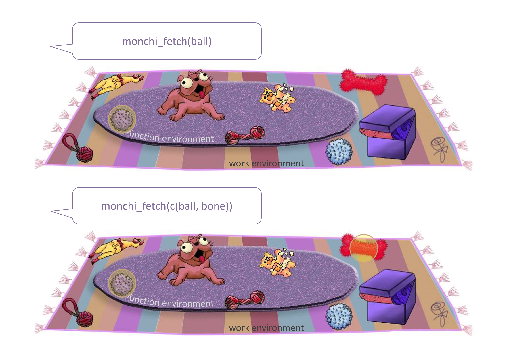
If a name isn’t defined inside a function, R will look one level up in the environment where the function was defined to find its value. Art by Cristina Grajera
In base R, we typically work with environment variables (env-variables), meaning objects that exist in the workspace. In contrast, the tidyverse allows us to also refer directly to data variables, which are columns inside a data frame, as if they were regular objects.
This behavior is known as non-standard evaluation. It simplifies code by letting us write expressions like filter(species == "Adelie") instead of explicitly referencing the data frame (e.g., penguins$species). However, this convenience introduces some complexity in how functions are written and understood.
tidyverse allows us to use data variables (toys inside the box – the data.frame) as if they were environment variables (toys on the carpet). When Monchi puts on the tidyglasses, he can easily see and use the toys inside the box without taking them out. These tidyglasses represent non-standard evaluation, which makes R evaluate expressions in a different environment, where the columns of the data frame are directly accessible. Art by Cristina Grajera.
3 Introduction to Functional Programming
The increasing availability of data and the growing complexity of analyses make efficient data management and analysis essential. One way to improve efficiency in R is through function-based programming, where repeated tasks are automated using functions (e.g., reading multiple datasets or applying the same transformation).
Functions can be combined and called within other functions, and this process can be iterated, making R a powerful and flexible tool. Iteration refers to performing the same operation on multiple inputs. There are two main paradigms for iteration: object-oriented programming (OOP) and functional programming (FP).
In this course, the focus is on functional programming, particularly using the {purrr} package, which provides tools to replace traditional loops with more concise, readable, and consistent code.
It’s hard to describe exactly what a functional style is, but generally I think it means decomposing a big problem into smaller pieces, then solving each piece with a function or combination of functions. When using a functional style, you strive to decompose components of the problem into isolated functions that operate independently. Each function taken by itself is simple and straightforward to understand; complexity is handled by composing functions in various ways.
Imagine we want to build a castle in R. We start by creating simple components, such as a wall or a roof (basic functions). Then, we reuse and combine these components to build more complex structures, like rooms. By iterating these processes, we gradually construct the entire castle.
[1] 0.2545455 0.2690909 0.2981818 NA 0.1672727 0.2618182
The main advantages of functional programming (using functions and iterations) are:
Improved readability and understanding:
Functions have clear, descriptive names that reflect their purpose.
Code is more organized and easier to follow for yourself, collaborators, and reviewers.
Modularity and flexibility:
Functions are independent units that solve specific problems. This makes it easier to modify or update parts of the code without affecting the whole program.
Reduced error probability:
Reusing well-defined functions minimizes repetition and helps avoid mistakes.
3.1 When do we have to use a function?
It is recommended to follow the DRY (Don’t Repeat Yourself) principle, which states that each piece of knowledge or code should have a single, clear, and authoritative representation within a program.
In practice, writing a function becomes worthwhile when you find yourself copying and pasting the same code more than twice (avoid being WET — Write Everything Twice). Repeating code in multiple places makes it harder to maintain, since any change must be applied everywhere, increasing the risk of inconsistencies and errors.
4 Theory of functions in R
Functions have three components:
body(): the code inside the function that defines what the function does.
formals(): the list of arguments that control how the function is executed.
environment(): the environment where the function is defined, which determines how variables are found (scoping).
Primitive functions are the exception as they do not have the aforementioned components. They are written in C instead of R and only appear in the {base} package. Because they are written at a lower level, they are more efficient but behave differently from other functions. For this reason, the R Core Team rarely introduces new primitive functions, and most functions in R follow the standard structure described earlier.
sum
function (..., na.rm = FALSE) .Primitive("sum")
body(sum)
NULL
According to the type of output, there are two types of functions:
Transformation functions: they transform the object that enters the function (the first argument) and return another object or the original one with modifications. Functionals are special types of transformation functions.
Side-effect functions: they have side effects and perform an action rather than returning a visible result, such as saving a file or drawing a plot. Some commonly used examples are: library(), setwd(), plot(), write_delim(). These functions invisibly return the output, which is not saved but can be used in a pipeline.
In general, syntactically, functions have three components:
The function function() (primitive)
Arguments: list of inputs.
Body: the piece of code that follows function(), traditionally enclosed in curly braces.
name1_v1 <-function(x, y) {paste(x, y, sep ="_")} name1_v2 <-function(x, y) paste(x, y, sep ="_") name1_v3 <- \(x, y) paste(x, y, sep ="_") name1_v1("hi", "class")
[1] "hi_class"
name1_v2("hi", "class")
[1] "hi_class"
name1_v3("hi", "class")
[1] "hi_class"
📝 When a function has more than two lines, it is recommended to use curly braces {} to clearly define its body. The opening brace { should be on the same line as the function definition, while the closing brace } should be on its own line (except when used with else). Indentation also helps a lot to read and understand the hierarchy of the code within functions. To help with formatting, you can use Code > Reindent Lines/Reformat Selection in RStudio.
💡 Infix operators (+), flow control operators (for, if), subsetting operators ([ ], $), assignment operators (<-) or even curly braces ({ }) are also functions. Backticks ` can be used to refer to functions or variables that have otherwise “illegal” names.
3+2
[1] 5
`+`(3, 2)
[1] 5
for (i in1:2) print(i)
[1] 1
[1] 2
`for`(i, 1:2, print(i))
[1] 1
[1] 2
In R, functions usually have a name and are called when needed. However, naming a function is not required. Anonymous functions (functions without a name) can be used directly where they are needed. This is especially common in iteration tools, such as those in the {purrr} package or the base R apply family.
📝 It is better to reserve the use of anonymous functions for short and simple functions. If the function is long, spans multiple lines or we need to use it many times it is better to give it a name.
5 How to write functions
5.0.1 Exercise
Create your first function that fulfills the functionality of dividing any value by 100.
💡 Shortcut to write functions: write word fun + tab
Imagine we have a dataset and we want to visualize the distribution of each numerical variable, separated by specific categorical variables of interest.
penguins_num <- penguins |>select(species, sex, where(is.numeric))# we are interested in differences among species and between sexes ggplot(penguins_num, aes(x = species, y = bill_length_mm, color = sex)) +geom_point(position =position_jitterdodge(), alpha =0.3) +geom_boxplot(alpha =0.5) +scale_color_manual(values =c("turquoise", "goldenrod1")) +theme_light()
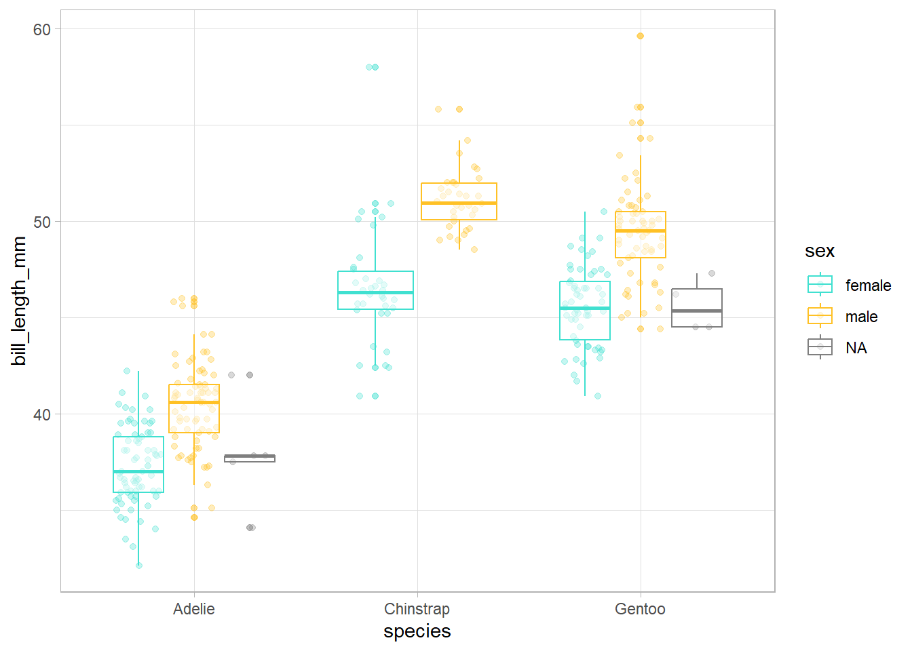
ggplot(penguins_num, aes(x = species, y = bill_depth_mm, color = sex)) +geom_point(position =position_jitterdodge(), alpha =0.3) +geom_boxplot(alpha =0.5) +scale_color_manual(values =c("turquoise", "goldenrod1")) +theme_light()
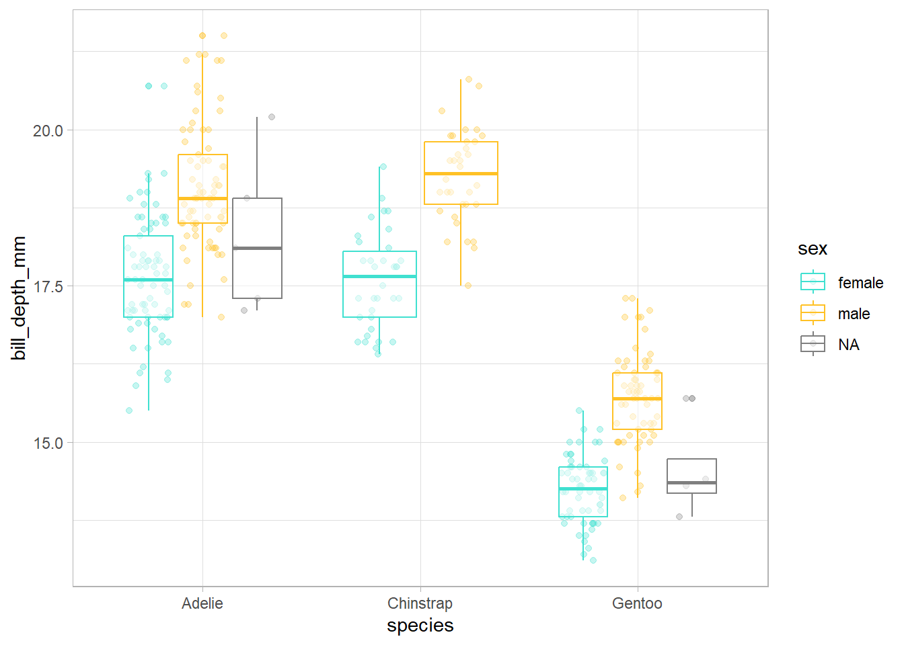
ggplot(penguins_num, aes(x = species, y = flipper_length_mm, color = sex)) +geom_point(position =position_jitterdodge(), alpha =0.3) +geom_boxplot(alpha =0.5) +scale_color_manual(values =c("turquoise", "goldenrod1")) +theme_light()
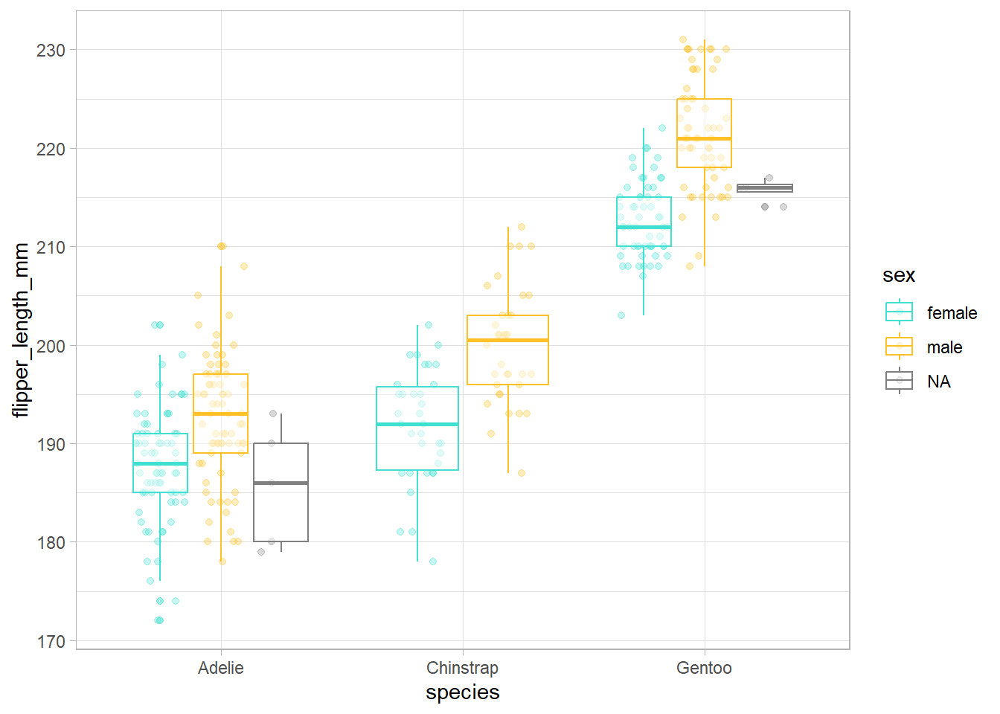
# etc
We have copied a code more than twice to perform the same action (i.e., a plot to see how a variable is distributed based on two others that remain constant), this is a sign that we should consider the possibility of writing a function. Next, we will follow some simple steps to transform any repeated code into a function.
Analyze the code: which are the repeated parts? How many inputs do we have? Which inputs vary and which do not?
Simplify and reanalyze duplications.
var <- penguins_num$bill_length_mmggplot(penguins_num, aes(x = species, y = var, color = sex)) +geom_point(position =position_jitterdodge(), alpha =0.3) +geom_boxplot(alpha =0.5) +scale_color_manual(values =c("turquoise", "goldenrod1")) +theme_light()
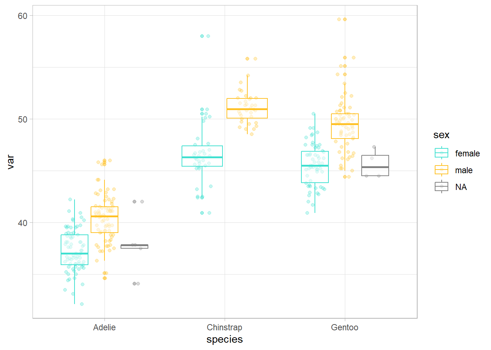
var <- body_mass_g
Error:
! object 'body_mass_g' not found
var <-"body_mass_g"ggplot(penguins_num, aes(x = species, y = var, color = sex)) +geom_point(position =position_jitterdodge(), alpha =0.3) +geom_boxplot(alpha =0.5) +scale_color_manual(values =c("turquoise", "goldenrod1")) +theme_light() +ylab(var) # wrong
👀 ggplot() requires arguments (data-variables) that are within the data.frame being plotted. To generalize the function, we have associated the name of the variable as a character string to the name “var”, but ggplot() does not accept character strings directly as aesthetic mappings. To handle this, we need a mechanism that can translate a character string into a data-variable inside the data frame. In the tidyverse, this is solved using tools for non-standard evaluation , such as .data[[var]] or { } (in functions). To solve common functional programming problems arising from the non-standard evaluation of the tidyverse, check out this link.
📝 Creating objects with intermediate calculations within a function is good practice because it makes the code clearer about what the function is doing. It is common when the function contains if/else statements.
Choose a name for the function (📝). Ideally, it should be short and descriptive, clearly reflecting what the function does. In general, it should be a verb (e.g. impute_values) since functions perform actions. In contrast, arguments should be nouns (e.g. “data”, “variable”, etc.) because they represent the objects being acted upon. Using a noun for a function is allowed if the function performs well-known operations (e.g. mean()) or if it serves to access parts of an object (e.g. residuals()). It is also recommended to avoid very generic verbs (e.g. “calculate”). If a function name contains multiple words, you can separate them using underscores (snake_case), dots, or camelCase, but it is important to stay consistent within a project. If you program several function that do similar things, it is recommended to use the same prefix for all of them (e.g. “str_” in {stringr} package).
💡 The more clearly you can express the intention of your code through function names, the more easily others, including yourself in the future, will be able to read and understand the code.
# examples of names to avoidT <-FALSEc <-10mean <-function(x) sum(x)rm(T, c, mean)
Enumerate the arguments within function() and put the simplified code inside the curly braces.
explore_penguins <-function (var) {ggplot(penguins_num, aes(x = species, y = .data[[var]], color = sex)) +geom_point(position =position_jitterdodge(), alpha =0.3) +geom_boxplot(alpha =0.5) +scale_color_manual(values =c("turquoise", "goldenrod1")) +theme_light() +ylab(var) }explore_penguins2 <-function(var) {ggplot(penguins_num, aes(x = species, y = {{ var }}, color = sex)) +geom_point(position =position_jitterdodge(), alpha =0.3) +geom_boxplot(alpha =0.5) +scale_color_manual(values =c("turquoise", "goldenrod1")) +theme_light()}
📝 Comments (#) should be used to explain the reasoning behind the code, not to describe what the code is doing or how it works. The code itself should already communicate the “what” and “how”. Good comments help clarify the “why”. It is also recommended to use # to separate sections (Cmd/Ctrl + Shift + R).
Try using different inputs.
explore_penguins(var ="body_mass_g")
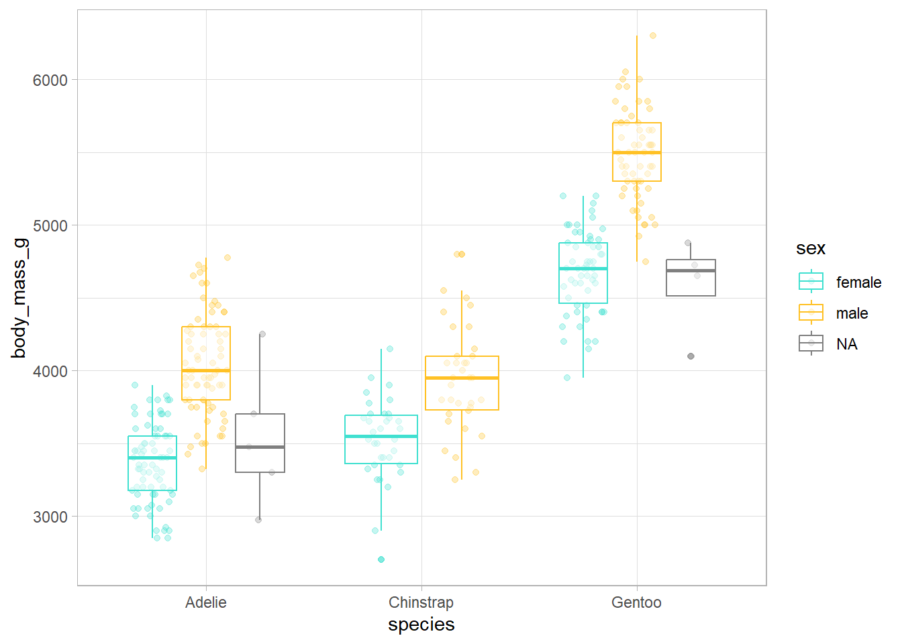
explore_penguins(var ="flipper_length_mm")
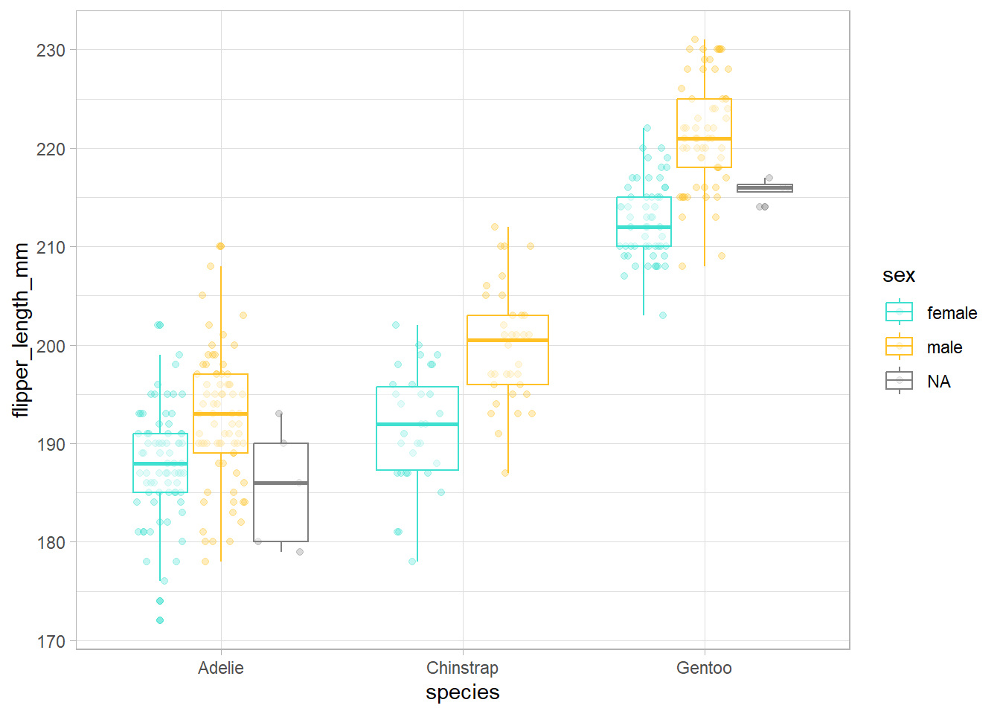
explore_penguins2(var = body_mass_g)
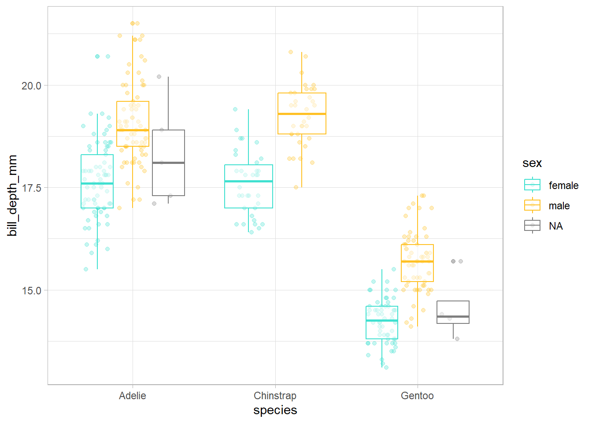
💡 You may want to convert these tests into formal tests. In complex functions and packages, tests are essential to ensure that changes in the code do not break existing functionality. If you’re interested, check out this link.
5.0.2 Exercise
Create a function to standardize (i.e., subtract the mean and divide by the standard deviation) the numerical variables of the penguins dataset.
5.1 Arguments
Arguments are usually divided into two groups:
Data arguments: specify the main input data the function works on.
Detail arguments: control how the function is executed (settings, options, behavior).
By convention, data arguments come first, followed by detail arguments. Detail arguments often have default values, which are used automatically if the user does not specify them.
📝 The argument names should be short and descriptive. In some cases, we can use standard argument names that are widely known by users, even if they are not highly descriptive, and it’s fine to take advantage of them.
x, y, z: vectors
w: vector of weights
df: data frame
i, j: numerical indices, rows and columns, respectively
n: length or row numbers
p: column number
na.rm: not available values
When executing the function, arguments can be specified using the full name, a unequivocal abbreviation, or the order of their position (unnamed arguments), with this sequence (name > abbreviation > position) being the priority order when matching arguments with what is written.
📝 Generally, only positional order is used to specify the first arguments, since they are the most common ones that everyone knows. If a default value for a detail argument is changed, it is advisable to always use the full name of the argument.
📝Using spaces before and after = and after , makes it much easier to identify the arguments of the function and, in general, all components.
set.seed(123)mean(rnorm(10, mean =50, sd =25) /12, trim =0.2)
There is a special argument called …, which captures any other argument not defined in the function. It is used to pass extra arguments to other functions inside it, making functions more flexible and extensible.
?plotplot(1:5, 1:5)plot(1:5, 1:5, main ="I am using an argument of title()")
📝 Using … make functions being very flexible, but it makes necessary to carefully read the function documentation to use it. Another drawback is that typos in argument names may not produce errors, since unmatched arguments can be silently passed through.
sum(1, 2, 5, na.mr =TRUE)
[1] 9
5.2 Return values
The last expression executed in a function is the return value. It is the result of executing the function, unless invisible() is specified. Functions return only one object. If you want to obtain more, they must be grouped in a list.
📝 The function return() is used to explicitly specify the output of a function. It is particularly useful in situations where the return value is not at the end of the function, such as in functions with conditional logic (if/else), where different branches may produce different outputs.
5.2.1 Exercise
How would you generalize the function explore_penguins() so you can use any data frame as input?
5.2.2 Advanced exercise
Create a function like rescale01() that can be applied to a dataset and a variable but includes the mutate() inside the function itself.
💡 Hint:
name <-function(data, x) { data |>mutate(...)}
6 Object-oriented programming (OOP) and iterations using loops
The main motivation for object-oriented programming (OOP) is polymorphism (from the Greek “many forms”). Polymorphism allows the same function to behave differently depending on the type (class) of the input object, while keeping a consistent interface for the user. For example, the function summary() produces different outputs depending on the type of input:
summary(penguins$bill_depth_mm)
Min. 1st Qu. Median Mean 3rd Qu. Max. NA's
13.10 15.60 17.30 17.15 18.70 21.50 2
summary(penguins$sex)
female male NA's
165 168 11
At first glance, it may seem that summary() uses many if/else statements internally to handle different data types. However, in OOP systems, this behavior is instead achieved through methods, which are specific implementations of a function for different classes of objects. We can inspect this behavior using:
Method: the implementation of a function for a specific class (what it does)
Generic function: a function (like summary()) that selects the correct method automatically based on the class
Object-oriented programming is very useful because it allows developers to extend existing functions without modifying them, by defining new methods for new classes.
Object-oriented programming, used by languages, such as Java or Python, has been the most popular programming paradigm in recent decades and uses an imperative programming style. Base R provides three OOP systems (S3 –which is the most used-, S4 and RC), although there are also other OOP systems provided by different CRAN packages.
In imperative programming the most common tools to reduce duplications are for loops and while loops. loops are recommended to delve into the world of iterations because they make each iteration very explicit so it is clear what is happening.
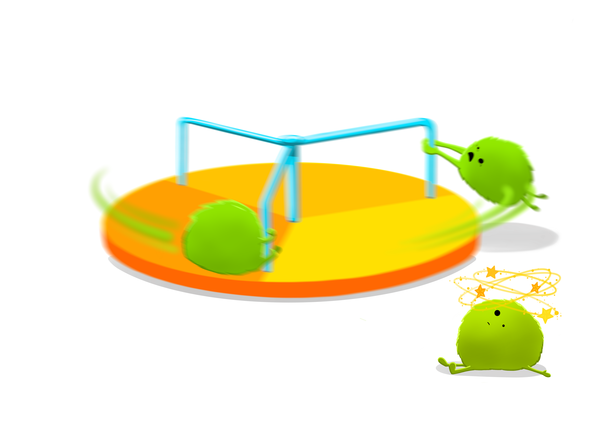
Graphic representation of the operation of for loops where it is clearly seen that an iteration is being carried out. Illustration by Allison Horst taken from Hadley Wickham’s talk The Joy of Functional Programming (for data science).
Programming a loop needs to define three different parts: the output, the sequence and the body.
# we could generalize the for loopoutput <-vector("double", ncol(df_sam)) # 1. outputfor (i inseq_along(df_sam)) { # 2. sequence output[[i]] <-first(df_sam[[i]]) # 3. body}output
[1] 3 3 2
# we could also iterate over rowsoutput <-vector("double", nrow(df_sam)) for(i in1:nrow(df_sam)) { output[[i]] <-sum(df_sam[i, ])}output
[1] 8 6 8 13 10
Output: here we determine the output space, i.e., first we have to create the “notebook” where we are going to write down all the results. This is very important for efficiency since if we increase the size of the output in each iteration with c() or another function that adds elements, the for loop will be much slower.
x <-c()system.time(for(i in1:20000) { x <-c(x, i) })
user system elapsed
0.20 0.01 0.25
y <-vector("double", length =20000)system.time(for(i inseq_along(y)) { y[i] <- i })
user system elapsed
0 0 0
Sequence: here we determine what we want to iterate over. Each iteration of the for loop will assign a different value of seq_along(y) to i.
Body: Here we determine what we want each iteration to do. The action is executed repeatedly, each time with a different value for i.
6.0.1 Exercise
Compute the mean of every column in the {palmerpenguins} dataset using a for loop.
There are different variations of for loops: (i) modifying an existing object instead of creating a new one; (ii) loops over names or values instead of indices; (iii) loops when we do not know the length of the output; (iv) loops when we do not know the length of the input sequence, i.e., while loops.
👀 Some common pitfalls when using for loops (see 5.3.1 Common pitfalls).
Despite being widely used in R, for loops are not as important as they may be in other languages because R is a functional programming language. This means that it is possible to wrap for loops in a function and call that function instead of using the loop.
There is a belief that for loops are slow, but the real disadvantage of for loops is that they are too flexible and may execute many different tasks. Instead, each functional ({purrr}, apply) is designed for a specific task, so as soon as you see it in the code, you immediately know why it’s being used. That is, the main advantage is its clarity by making the code easier to write and read (see this advanced example to understand it: https://adv-r.hadley.nz/functionals.html, 9.3 Purrr style). Once we master functional programming, we will be able to solve many iteration problems with less code, more ease, and fewer errors.
To become significantly more reliable, code must become more transparent. In particular, nested conditions and loops must be viewed with great suspicion. Complicated control flows confuse programmers. Messy code often hides bugs.
Loops can be more explicit in the sense that you see the iteration clearly, but it takes more time to understand what you are doing. On the contrary, functionals require one more step of abstraction and may require time until we understand them. Anyway, the most important aspect is that you are able to solve the problems you are facing and little by little write increasingly simpler and more elegant code.
7 Functional programming
- Everything that exists is an object.
— John Chambers
- However, not everything is object-oriented
In R, functional programming is often more relevant than OOP, as complex problems are typically solved by breaking them down into simpler functions rather than focusing on objects.
In functional programming, functions are designed to perform a single specific task and are then combined by applying them successively to a dataset. A key advantage of this approach is that functions can be reused across different projects, promoting modularity. Additionally, when functions are well documented and easily testable, the code becomes easier to understand and maintain.
A functional is a function that takes another function as input and returns a vector or another structured object as output.
Based on the previous example, create a functional.
To program a functional, we follow three steps. First, we solve the problem for a single element. Next, we wrap that solution into a function (as seen in Section 5). Finally, we apply this function to all the elements of interest. That is, we break down a large problem into smaller tasks and solve each one using one or more functions.
Graphical representation of the operation of map() where the focus is on the operation performed. Illustration by Allison Horst taken from Hadley Wickham’s talk The Joy of Functional Programming (for data science)
The advantage of using {purrr} instead of for loops is that it provides a specific function (functional) for each common data manipulation task. In this sense, each type of for loop has its own corresponding function, making the intention of the code clearer. For example, to iterate over one argument we use map() and to iterate over two arguments we use map2().
💡 The base R apply family solves similar problems, but {purrr} is more consistent and therefore easier to learn. In addition, {purrr} supports helper functions that the apply family doesn’t (e.g. map_dbl(), \(x)). However, if you are an experienced apply user and only use map() from {purrr}, you may choose to avoid adding an extra dependency and continue using base R.
Iterating over one vector (i.e. vector of values or vector of elements in a list) is so common that the {purrr} package provides a family of functions (the map() family) for it. There is a different function for each type of output. The suffix indicates the type of output we want:
map() returns a list.
map_lgl() returns a logical vector.
map_int() returns a vector of integers.
map_dbl() returns a vector of decimal numbers.
map_chr() returns a character vector.
map_vec() returns a vector automatically determining the type.
Remember that data frames are lists of vectors of the same length, so any calculation by rows or columns involves iterating over a vector.
output <-vector("double", 3)for (i in1:3) { output[[i]] <-first(df_sam[[i]])}output
[1] 3 3 2
Compared to a loop, the focus is on the operation being executed (first()), rather than on the code needed to iterate over each element and save the output.
8 Iterations over one argument
map_*() is vectorized over one argument, e.g. (x). The function will operate on all elements of x, i.e., each value if x is a vector, each column if x is a data.frame, each group if x is a grouped data.frame, or each element if x is a list.
8.1 Our first functional: generating lists, map()
It takes a vector and a function, calls the function once for each element of the vector, and returns the results in a list. map(1:3, f) is equivalent to list(f(1), f(2), f(3)).
💡 It is the equivalent of base R’s lapply().
quadratic <-function(x) { x ^2}map(1:4, .f = quadratic)
# A tibble: 1 × 8
species island bill_length_mm bill_depth_mm flipper_length_mm body_mass_g
<int> <int> <int> <int> <int> <int>
1 3 3 165 81 56 95
# ℹ 2 more variables: sex <int>, year <int>
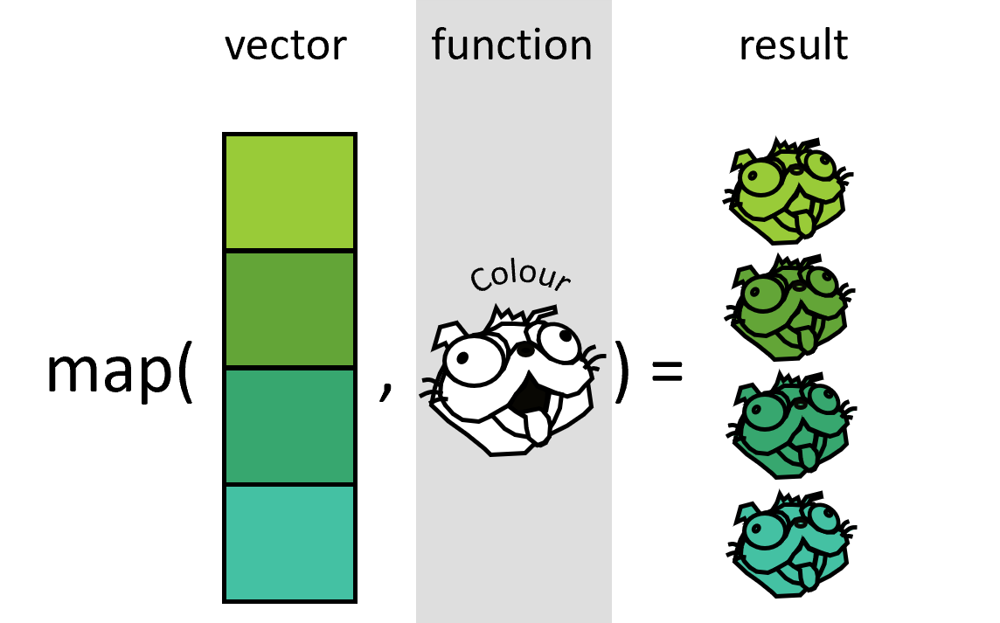
8.1.1 Exercise
Generate a vector, a function and apply the function to each of the elements of the vector using map().
As said before, it is possible to wrap for loops in a function and call that function instead of using the loop.
imple_map <-function(x, f, ...) { out <-vector("list", length(x))for (i inseq_along(x)) { out[[i]] <-f(x[[i]], ...) } out}imple_map(1:4, quadratic)
[[1]]
[1] 1
[[2]]
[1] 4
[[3]]
[1] 9
[[4]]
[1] 16
💡 Some advantages of {purrr} functions versus wrapping a for loop yourself are that {purrr} functions are implemented in C to maximize performance, preserve names, and support some shortcuts (e.g. \(x)).
8.1.2 Exercise
Now that you have understood the logic of map(), spot the differences between the following three lines of code. What does the map() functional do? What differences do you detect in the code? And in the output?
map(penguins, \(x) mean(x))
Warning in mean.default(x): argument is not numeric or logical: returning NA
Warning in mean.default(x): argument is not numeric or logical: returning NA
Warning in mean.default(x): argument is not numeric or logical: returning NA
$species
[1] NA
$island
[1] NA
$bill_length_mm
[1] NA
$bill_depth_mm
[1] NA
$flipper_length_mm
[1] NA
$body_mass_g
[1] NA
$sex
[1] NA
$year
[1] 2008.029
map(penguins, \(x) mean(x, na.rm = T)) # option 1
Warning in mean.default(x, na.rm = T): argument is not numeric or logical:
returning NA
Warning in mean.default(x, na.rm = T): argument is not numeric or logical:
returning NA
Warning in mean.default(x, na.rm = T): argument is not numeric or logical:
returning NA
$species
[1] NA
$island
[1] NA
$bill_length_mm
[1] 43.92193
$bill_depth_mm
[1] 17.15117
$flipper_length_mm
[1] 200.9152
$body_mass_g
[1] 4201.754
$sex
[1] NA
$year
[1] 2008.029
map(penguins, mean, na.rm = T) # option 2
Warning in mean.default(.x[[i]], ...): argument is not numeric or logical:
returning NA
Warning in mean.default(.x[[i]], ...): argument is not numeric or logical:
returning NA
Warning in mean.default(.x[[i]], ...): argument is not numeric or logical:
returning NA
$species
[1] NA
$island
[1] NA
$bill_length_mm
[1] 43.92193
$bill_depth_mm
[1] 17.15117
$flipper_length_mm
[1] 200.9152
$body_mass_g
[1] 4201.754
$sex
[1] NA
$year
[1] 2008.029
As we have seen in the previous exercise, arguments that vary for each run are written before the function, and arguments that remain constant across all runs are written after the function (e.g. na.rm = T).
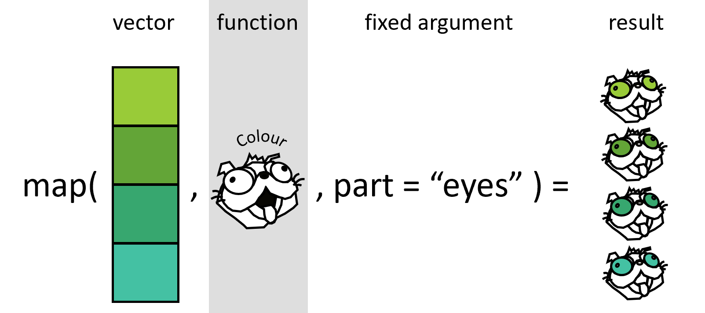
If we wanted to pass additional arguments to the function used within map(), one option is to use an anonymous function (see option 1 of the previous exercise). However, since map() includes ... among its arguments, we can also pass additional arguments directly after the function inside map() in a much simpler way (see option 2 of the previous exercise). There is a subtle difference between these two approaches. When using an anonymous function, the additional arguments are evaluated every time the function is executed, not just once when map() is called (see the following example).
multiply <-function(x, y) { x * y}input_vec <-c(4, 4, 4)# the result is always the samemap_dbl(input_vec, multiply, y =sample(x =1:10, 1))
[1] 36 36 36
# the result is not always the samemap_dbl(input_vec, \(x) multiply(x, y =sample(x =1:10, 1)))
[1] 12 16 4
8.2 Our second functional: generating vectors, map_*()
8.2.1 Exercise
Take a couple of minutes to understand what the following functions do:
map_lgl(penguins, is.numeric)
species island bill_length_mm bill_depth_mm
FALSE FALSE TRUE TRUE
flipper_length_mm body_mass_g sex year
TRUE TRUE FALSE TRUE
bill_length_mm bill_depth_mm flipper_length_mm body_mass_g
44.45 17.30 197.00 4050.00
year
2008.00
map_chr(penguins, class)
species island bill_length_mm bill_depth_mm
"factor" "factor" "numeric" "numeric"
flipper_length_mm body_mass_g sex year
"integer" "integer" "factor" "integer"
map_int(penguins, \(x) length(unique(x)))
species island bill_length_mm bill_depth_mm
3 3 165 81
flipper_length_mm body_mass_g sex year
56 95 3 3
💡 Base R has two functions from the apply() family that can return vectors: sapply() and vapply(). We recommend avoiding sapply() because it tries to simplify the result automatically and chooses a default output format. Depending on the input, it may return a list, a vector, or even a matrix, which can make results less predictable. vapply() is safer because it allows you to indicate the output type with FUN.VALUE. The main disadvantage of vapply() is that we need to specify more arguments than in map_*().
map_dbl(penguins_num, median, na.rm = T)
bill_length_mm bill_depth_mm flipper_length_mm body_mass_g
44.45 17.30 197.00 4050.00
year
2008.00
⚡ Important! The first iteration corresponds to the first value of the vector x and the first value of the vector y. The second iteration corresponds to the second value of the vector x and the second value of the vector y. Not all possible combinations are made between both vectors.
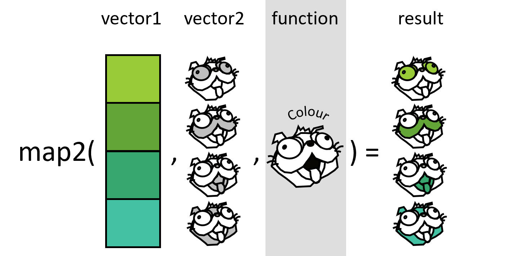
imple_map2 <-function(x, y, f, ...) { out <-vector("list", length(x))for (i inseq_along(x)) { out[[i]] <-f(x[[i]], y[[i]], ...) } out}imple_map2(x, y, power)
💡 If we do not name the list elements, pmap() will use the list elements in their order for consecutive arguments to the function. In any case, it is good practice to name the elements of the list so that it is clear which input corresponds to which argument of the function.
args3 <-list(mean = x, sd = y, n = z) args3 |>pmap(rnorm)
Transform the map2() that you have generated in the exercise Section 9.1.1 to pmap().
💡 The closest base R equivalents to map2() and pmap() are Map() and mapply(), but both have important limitations:
Map() vectorises over all arguments, which means it is not possible to include arguments that should remain constant across iterations.
mapply() is essentially a multidimensional version of sapply(). It takes the output of Map() and attempts to simplify it, which can lead to the same type of issues as sapply(). There is no multi-input equivalent of vapply(), making type safety harder to ensure.
10 Iterations without output
10.1 Our fifth functional: walk(), walk2() and pwalk()
When we use functions for their side effects (e.g. ggsave()) and not for their return value. The important part is the action performed and not the return value or object in R.
10.1.1 Exercise
Based on the definition of the walk() family, run this code and understand what it does.
# A tibble: 3 × 3
# Groups: species [3]
species data path
<fct> <list> <glue>
1 Adelie <tibble [152 × 7]> penguins_Adelie.csv
2 Gentoo <tibble [124 × 7]> penguins_Gentoo.csv
3 Chinstrap <tibble [68 × 7]> penguins_Chinstrap.csv
walk2(penguins_nested_str$data, penguins_nested_str$path, write_csv)# see the action invisibly return using parentheses(walk2(penguins_nested_str$data, penguins_nested_str$path, write_csv))
[[1]]
# A tibble: 152 × 7
island bill_length_mm bill_depth_mm flipper_length_mm body_mass_g sex year
<fct> <dbl> <dbl> <int> <int> <fct> <int>
1 Torge… 39.1 18.7 181 3750 male 2007
2 Torge… 39.5 17.4 186 3800 fema… 2007
3 Torge… 40.3 18 195 3250 fema… 2007
4 Torge… NA NA NA NA <NA> 2007
5 Torge… 36.7 19.3 193 3450 fema… 2007
6 Torge… 39.3 20.6 190 3650 male 2007
7 Torge… 38.9 17.8 181 3625 fema… 2007
8 Torge… 39.2 19.6 195 4675 male 2007
9 Torge… 34.1 18.1 193 3475 <NA> 2007
10 Torge… 42 20.2 190 4250 <NA> 2007
# ℹ 142 more rows
[[2]]
# A tibble: 124 × 7
island bill_length_mm bill_depth_mm flipper_length_mm body_mass_g sex year
<fct> <dbl> <dbl> <int> <int> <fct> <int>
1 Biscoe 46.1 13.2 211 4500 fema… 2007
2 Biscoe 50 16.3 230 5700 male 2007
3 Biscoe 48.7 14.1 210 4450 fema… 2007
4 Biscoe 50 15.2 218 5700 male 2007
5 Biscoe 47.6 14.5 215 5400 male 2007
6 Biscoe 46.5 13.5 210 4550 fema… 2007
7 Biscoe 45.4 14.6 211 4800 fema… 2007
8 Biscoe 46.7 15.3 219 5200 male 2007
9 Biscoe 43.3 13.4 209 4400 fema… 2007
10 Biscoe 46.8 15.4 215 5150 male 2007
# ℹ 114 more rows
[[3]]
# A tibble: 68 × 7
island bill_length_mm bill_depth_mm flipper_length_mm body_mass_g sex year
<fct> <dbl> <dbl> <int> <int> <fct> <int>
1 Dream 46.5 17.9 192 3500 fema… 2007
2 Dream 50 19.5 196 3900 male 2007
3 Dream 51.3 19.2 193 3650 male 2007
4 Dream 45.4 18.7 188 3525 fema… 2007
5 Dream 52.7 19.8 197 3725 male 2007
6 Dream 45.2 17.8 198 3950 fema… 2007
7 Dream 46.1 18.2 178 3250 fema… 2007
8 Dream 51.3 18.2 197 3750 male 2007
9 Dream 46 18.9 195 4150 fema… 2007
10 Dream 51.3 19.9 198 3700 male 2007
# ℹ 58 more rows
10.1.2 Advanced exercise
Generate an example where you use walk2() or pwalk() to save multiple plots generated with ggplot(). Hint: the first entry will be the plot you want to save and the second the name of the file you want to assign to it.
💡 There is no base R equivalent to walk(). You can mimic its behavior by wrapping the result of lapply() in invisible() or by assigning it to a variable that is not used later in the code. For R base functionals that have no equivalent in {purrr}, see: https://adv-r.hadley.nz/functionals.html#base-functionals
11 Function operators and other functionals
11.1 More variants of map(): modify() and imap()
modify() and imap() are also part of the map family. modify() is analogous to map() but it preserves the input type in the output.
imap() is used to iterate over indexes, both numeric indexes and names. imap(x, f) is analogous to map2(x, names(x), f) when x has names and map2(x, seq_along(x), f) when it does not.
$species
[1] "The column species has 3 unique values counting NA's"
$island
[1] "The column island has 3 unique values counting NA's"
$bill_length_mm
[1] "The column bill_length_mm has 165 unique values counting NA's"
$bill_depth_mm
[1] "The column bill_depth_mm has 81 unique values counting NA's"
$flipper_length_mm
[1] "The column flipper_length_mm has 56 unique values counting NA's"
$body_mass_g
[1] "The column body_mass_g has 95 unique values counting NA's"
$sex
[1] "The column sex has 3 unique values counting NA's"
$year
[1] "The column year has 3 unique values counting NA's"
$species
[1] "The column species has 3 unique values counting NA's"
$island
[1] "The column island has 3 unique values counting NA's"
$bill_length_mm
[1] "The column bill_length_mm has 165 unique values counting NA's"
$bill_depth_mm
[1] "The column bill_depth_mm has 81 unique values counting NA's"
$flipper_length_mm
[1] "The column flipper_length_mm has 56 unique values counting NA's"
$body_mass_g
[1] "The column body_mass_g has 95 unique values counting NA's"
$sex
[1] "The column sex has 3 unique values counting NA's"
$year
[1] "The column year has 3 unique values counting NA's"
[[1]]
[1] "The column 1 has 5 unique values counting NA's"
[[2]]
[1] "The column 2 has 5 unique values counting NA's"
[[3]]
[1] "The column 3 has 5 unique values counting NA's"
In this course we do not delve into modify() and imap() because with the other functionals we have seen we can address practically all iteration problems. However, if anyone is interested you can check out https://adv-r.hadley.nz/functionals.html, 9.4 Map variants.
Predicates are functions that return a single logical value (TRUE or FALSE), for example is.character(). A functional predicate applies a predicate function to each element of a vector: keep(), discard(), some(), every(), detect(), detect_index()… For more information see: https://r4ds.had.co.nz/iteration.html, 21.9.1 Predicate functions.
# A tibble: 344 × 3
species island sex
<fct> <fct> <fct>
1 Adelie Torgersen male
2 Adelie Torgersen female
3 Adelie Torgersen female
4 Adelie Torgersen <NA>
5 Adelie Torgersen female
6 Adelie Torgersen male
7 Adelie Torgersen female
8 Adelie Torgersen male
9 Adelie Torgersen <NA>
10 Adelie Torgersen <NA>
# ℹ 334 more rows
penguins |>every(is.numeric)
[1] FALSE
💡 Functional-style helpers
across() is similar in spirit to map(), but is designed for column-wise operations on data frames, applying a function to selected columns within mutate() or summarise().
rowwise() is similar in spirit to pmap(), and allows row-wise operations across multiple columns in a data frame, where each row is treated as a single observation.
reduce() is a useful way to generalize a function that works with two inputs (binary function) to work with any number of inputs.
# A tibble: 3 × 4
name age sex height
<chr> <dbl> <chr> <chr>
1 Vero 100 F 180
2 Julen 140 M 150
3 Monchi 200 M 500
# equivalent to doingls[["age"]] |>full_join(ls[["sex"]]) |>full_join(ls[["height"]])
Joining with `by = join_by(name)`
Joining with `by = join_by(name)`
# A tibble: 3 × 4
name age sex height
<chr> <dbl> <chr> <chr>
1 Vero 100 F 180
2 Julen 140 M 150
3 Monchi 200 M 500
11.3 Function operators
When we use map() functions to repeat many operations, the probability that one of those operations fails increases and this can stop the entire process from producing output. {purrr} provides some function operators in the form of adverbs to ensure that an error doesn’t ruin the entire process: safely(), possibly(), quietly(). For more information see: https://r4ds.had.co.nz/iteration.html, 21.6 Dealing with failure.
x <-list(10, "b", 3)x |>map(log)
Error in `map()`:
ℹ In index: 2.
Caused by error in `.f()`:
! non-numeric argument to mathematical function
[[1]]
[1] 2.302585
[[2]]
[1] NA
[[3]]
[1] 1.098612
11.3.1 Exercise
Use any variant of map() along with a function operator to the penguins database.
12 Parallelization
Different CPU cores (Central Processing Unit) can be used to run the same process with different sets of data in parallel, speeding up long tasks. Some tasks are particularly well suited for parallelization, such as, those that are repetitive and have little or no dependence on each other, other than the source of the input data, allowing them to be easily split into parallel tasks. These tasks are usually those that can be solved through iterations like those we have seen previously.
In theory, the process speeds up in proportion to the number of cores used. However, in practice, other factors must be considered, such as the time required to distribute data to each process and the time needed to combine the results afterward.
R was originally designed to operate on a single CPU process because, at the time of its development, CPUs typically had a single core, and parallel computing was neither common nor well-developed. As a result, using parallel computing in R has traditionally required additional packages.
library(parallel) # detect number of coreslibrary(future) # set number of coreslibrary(furrr) # parallelization with mapdetectCores()# function to cube a numbercube <-function(x) {Sys.sleep(1) # simulate a heavy computationreturn(x ^3)}# sequentialtime_initial <-Sys.time()output <-map(1:10, cube)time_final <-Sys.time()cat("Computing time:", round(time_final - time_initial, 1), "seconds")# establish how we are going to resolve the process# here we will use 3 cores but depending on the number of cores available on your computer it can be modified# as a rule of thumb, for maximum efficiency this should be at most one less than the number of cores on your machineplan(multisession, workers =3)# future_map to run in paralleltime_initial <-Sys.time()output <-future_map(1:10, cube)time_final <-Sys.time()cat("Computing time:", round(time_final - time_initial, 1), "seconds\n")# we see that the computing time has been reduced by almost 1/3 (approx. 1/number of cores)
However, this is changing fast. In the latest development version of purrr, the map functions now include a .parallel argument, enabling parallelization using the {mirai} package (see https://purrr.tidyverse.org/dev/reference/parallelization.html).
💡 Or even easier! The {futurize} package allows you to automatically transform sequential iteration code into parallel code. Instead of rewriting your code for parallel computing, you simply write your usual code (e.g. map(), lapply(), foreach()) and then “wrap” it with futurize().
This course is mainly based on the first edition of the book R for Data Science by Hadley Wickham & Garrett Grolemund and the second edition of the book Advanced R by Hadley Wickham.
You can ask questions, make suggestions or share new knowledge related to functional programming that you consider relevant here.